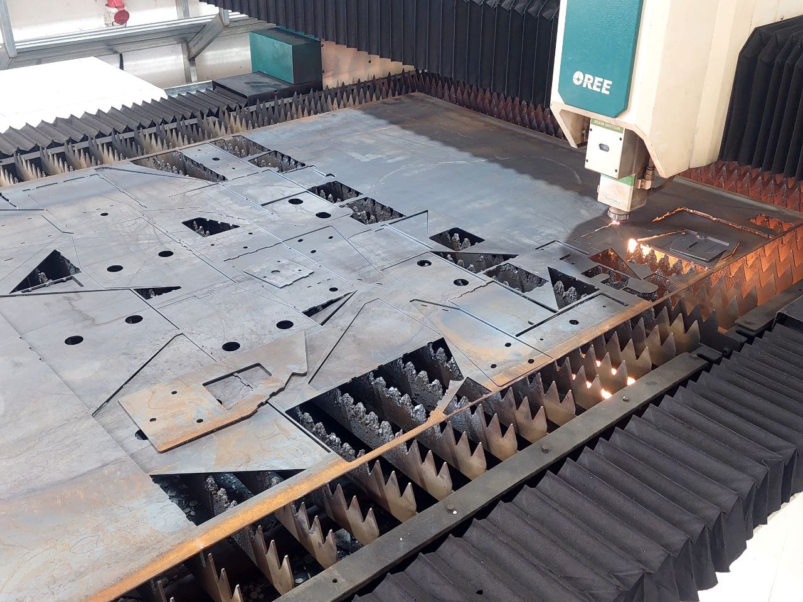

Reusable Welding Jig — Vega Street Bike Chassis
This project focused on the design and development of a reusable welding jig to support the accurate assembly of the Vega Street Bike chassis during fabrication. The primary objective was to ensure precise alignment and positioning of chassis members while welding, thereby minimising dimensional errors and improving repeatability in the manufacturing process. The jig structure was designed to provide sufficient rigidity and stability while allowing easy placement and removal of chassis components.
- Ensured precise chassis dimensional accuracy during assembly
- Reduced fabrication time and improved repeatability
- Reusable, modular jig design for multiple build cycles
- Full SolidWorks 3D CAD model with manufacturing drawings


Rear Paddock Stand — Vega Street Bike
This project involved the design and development of a rear paddock stand to support the Vega Street Bike during maintenance and servicing operations. The objective was to create a stable lifting mechanism that safely elevates the rear wheel while maintaining adequate structural rigidity. The design process included concept development, CAD modelling, and structural validation using Finite Element Analysis (FEA) in SolidWorks Simulation to evaluate stress distribution and deformation under load. The final stand was fabricated and tested with the motorcycle to verify stability, usability, and frame compatibility.
- Full SolidWorks 3D CAD model and assembly drawings
- FEA stress and deformation analysis under load
- Physical fabrication and real on-bike testing
- Verified stability, usability and frame compatibility
Quick Jack — Falcon E2 Car
Designed and developed a quick jack mechanism for the Falcon E2 race car to enable rapid wheel and undercarriage access during pit stops and maintenance. The design prioritised speed of operation, structural strength, and compact packaging to suit the race car environment. Full CAD modelling was completed in SolidWorks with a focus on load-bearing geometry and ease of use.
- Rapid deployment quick-jack mechanism design
- Optimised for race car packaging constraints
- SolidWorks 3D CAD model and drawings
Steering System Redesign — Falcon E2 Car
Redesigned and developed the steering system for the Falcon E2 race car to improve driver feedback, handling precision, and steering geometry. The project involved kinematic analysis of the existing system, identification of design shortcomings, and development of an improved steering linkage. The redesigned system was modelled in SolidWorks with attention to Ackermann geometry, bump steer characteristics, and driver ergonomics.
- Kinematic analysis of steering geometry
- Improved Ackermann and bump steer characteristics
- Full SolidWorks redesign with assembly and drawings